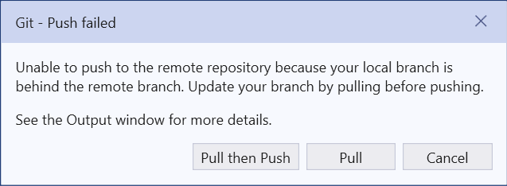

Source control provides one way to access your code from multiple machines. Before you decide to do this, however, you should consider whether this is the best approach. For example, if you have a CS Account, you have a network file system (the U: drive on CS Windows systems) that you can use whenever you have internet access. From off campus, you need to tunnel into campus using a Virtual Private Network, or VPN (see the KSU Information Technology Services page on Virtual Private Networking for instructions). Once on campus, you can mount this file system as a network drive by following the instructions on the CS support page, “DiskUsage”.
As an alternative to the U: drive or some cloud service, you can use your GitHub repositories to store a master copy of each assignment, and clone local copies as needed on the different machines you use. Once you have code in a GitHub repository, you can clone that repository to a local machine as described in “Git Repositories”. When you are finished working on that machine, commit all changes and push them to GitHub. If at some later point you need to resume working on a machine whose Git repository is out of date, you can update it by clicking the down-arrow icon in the Visual Studio “Git Changes” tab.
If you are careful about pushing all changes to GitHub and updating each local copy whenever you begin working on it, everything should go smoothly. Problems can occur, however, if you have made changes to a local version that is out of date, then either try to update it by pulling the GitHub copy, or try to push these changes to GitHub. In such cases, the following message will be shown:
At this point, you should click the “Pull then Push” button in the above message. This usually won’t fix the problem, as indicated by an error message at the top of the “Git Changes” tab. In order to resolve the conflicts in the two versions, look in the “Unmerged Changes” section of the “Git Changes” tab. This will list the files that are different in the two versions. To resolve the conflicts in a file, right-click on it, and select “Merge…”. Visual Studio will then show the two versions of the file side by side with the conflicts highlighted. If you want the version you are currently trying to push, simply click the “Take Current” button at the top. Otherwise, you can select individual portions from the two versions - the result will be shown below the two versions. When you are satisfied with the result, click the “Accept Merge” button. Once you have merged all conflicting files, you will then need to commit and push again.